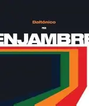

Lo veo por la ventana
Yo afuera y él adentro, un santo
Yo, el de vida profana
Ese intruso en mi cuarto
Se viste con mi ropa
Le grito, no me escucha
Y cuanto más trato, más se apropia de mis cosas
Es de anatomía
Idéntica a la mía
Su rostro es de alegría
El mío es de agonía
Miseria, tesoro
Él ríe, yo lloro
Los míos lo adoptan
Lo arropan
De lo que despoje, se apropia
Felices, yo triste
Intruso, me desapareciste
